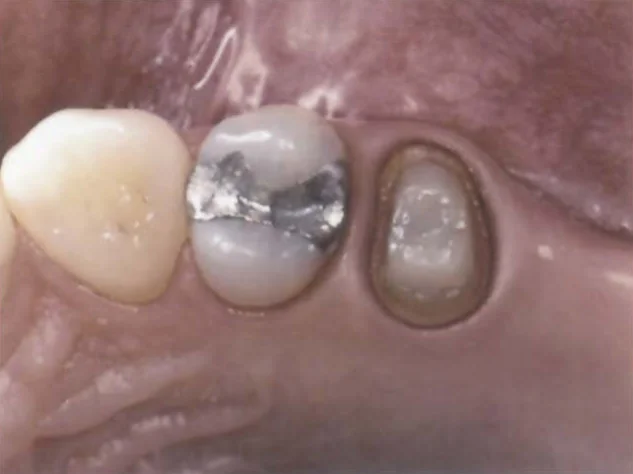

نسخه استخراجشده؛ ترجمه یا تأیید علمی انجام نشده است. وضعیت: captured
روکش سالم همراه کور جدا شده یا بخش تاجی هنگام برداشتن موقت شکسته است؛ کور تازه میتواند با داخل همان روکش جفت شود، اگر شرایط لازم برقرار باشد.
روکش قابل قبول، لبههای سالم و منطبق و حدود دو میلیمتر ساختار تاجی. ظاهر، کانتکت و بایت باید مناسب یا قابل اصلاح باشند؛ درمان مجدد ریشه هم نباید لبهها و ارتفاع دیوارهها را از بین ببرد.
طول بیرونی پست مانع نشست روکش نشود و آندرکات برای گیر ساخته شود. آندرکات در اتاقک پالپ و اطراف پست برای گیر مکانیکی کامپوزیت ایجاد میشود.
تا کامپوزیت اضافهی روی لبهها راحتتر دیده شود. کامپوزیت خلفی لایتکیور با رنگ متفاوت به تشخیص اضافه کمک میکند؛ داخل روکش با باندینگ آغشته میشود تا کامپوزیت به آن نچسبد.
کامپوزیت کم، امتحان نشست روکش، برداشتن روکش و کیور. اگر روکش کامل ننشیند، همان موقع از کور با فرز برداشته میشود؛ کار تا گیر و مقاومت کافی ادامه مییابد.
پاک کردن باندینگ داخل روکش، سندبلاست و سمان روکش. نسخهی ریختگی حساستر است؛ پترن دقیق دهانی ممکن است پس از ریختهگری همان تطابق با دندان و روکش را نداشته باشد.
